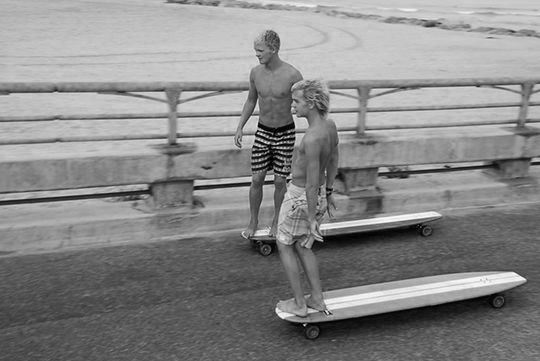
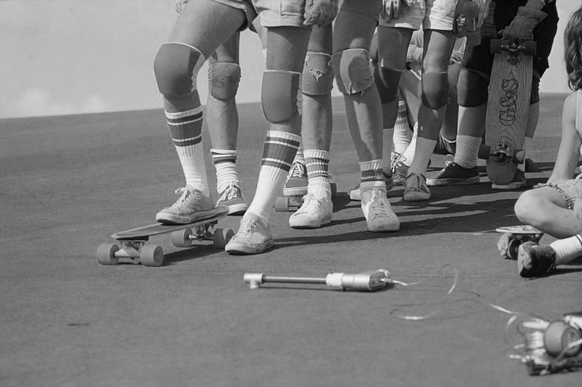
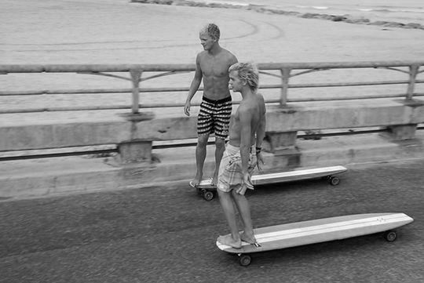
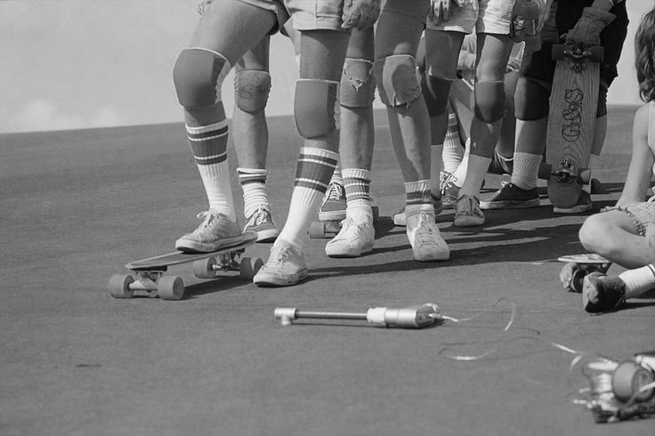

Un poco de HISTORIA
Con la llegada de las primeras obras de asfalto en la década del setenta, en Pinamar se tomó una decisión que sería crucial para entender lo que luego sucedería con la práctica del Longboard Skate. A diferencia de las localidades costeras vecinas, se respetó la altimetría natural de los médanos sobre los cuales se fijaron las calles, esto dio como resultado muchas calles con pendientes de alto grado de inclinación y con trayectos largos. Si bien siempre hubo algunos mitos que cuentan de alguien tirándose inconscientemente con esos skates ochenteros por la loma del tanque (Martín Pescador), o de algún grupo de chicos que se tiraba con skates tipo “Penny” por la bajada de Marco Polo, no fue hasta pasando los 2000 que el longboard skate tuvo un notable crecimiento a nivel internacional e inevitablemente también llegó hasta Argentina. Pasando el año 2010, por las calles de la ciudad ya no era algo extraño cruzarse turistas en largas tablas de skate disfrutando de las pendientes para deslizarse, y luego durante el invierno algunos grupos de amigxs también se animaban de manera rudimentaria a probar las lomas montados en tablas estilo pintail o con formas parecidas a tablas de surf, los ejes invertidos de 180° y las ruedas grandes ya empezaban a ser algo usual. “Ciento80” se llamó el primer (y único) local exclusivo de longboard skate que existió en Pinamar, su dueño Javier Montaperto, skater y surfista de las primeras camadas, notó el crecimiento de este deporte y enseguida trajo tablas e insumos lo que hizo que para el 2012 ya sea algo normal ver lonboarders por las lomas de la ciudad, ahora sí con cascos y guantes realizando derrapes en las calles. De estos distintos grupos de gente que se cruzaban por las distintas lomas de la ciudad surge la idea de empezar a juntarse y conformar un grupo de pertenencia, algo así como un club. En mayo de 2013 Yamile Isach, Braulio Sallies, Andres Villaverde, Martin Menendez, Francisco Bandi, Lucas Rodriguez, Camila Barreiro, Lionel Fimiani, Franco Martinez y Nahuel Patiño se reúnen para dar nacimiento a la Asociación Tablalarga Pinamar con el fin de dar a conocer las distintas modalidades de practica sobre un longboard skate en la ciudad, para organizarse y poder participar de competencias, para crear competencias locales y ofrecer espacios de prácticas que sirvan para formar nuevos patinadores en la ciudad. Luego se sumó un grupo de longboarders Geselinos y ya para el mes de agosto de 2013 se llevó a cabo el primer skate trip a Tandil. De ahí en más este grupo nunca paró de hacer cumplir aquel objetivo fijado en la primera reunión, siempre bajo la premisa de la solidaridad, de aprender, del compartir y disfrutar. Luego de algunas participaciones en eventos sociales como el festejo del Día del Niño 2013 en la plaza skate park con una concurrencia masiva, o las convocatorias a pateadas abiertas denominadas “Dominlong”, no fue hasta el año 2016 (con el reconocimiento como entidad de bien público por parte de la Municipalidad de Pinamar) donde se llevó a cabo la primer actividad oficial denominada “Coronado Freeride”, que se generó la consolidación y reconocimiento de este grupo de patinadores. El Coronado se convirtió con el paso de los años, en el evento de longboard skate más estable y de mayor crecimiento a nivel nacional, con 5 ediciones ininterrumpidas, ha visto disfrutar de la clásica bajada de Marco Polo a los mejores longboarders del país y a algunos cuantos deportistas extranjeros. Hoy en día en Pinamar se cuenta con una escuela municipal gratuita que tiene una trayectoria de 6 años de funcionamiento y varias generaciones que se van sumando a esta historia, como es el caso de Santiago Echeverria, Genaro Sallies, Danilo Saenz, Facundo Virgilio o las más recientes y jóvenes promesas, Tahiel Sosa y Kiara Gonzalez.
Además tiene representantes compitiendo en muy buen nivel en las distintas modalidades que hoy tienen rankings federados, como el caso de Braulio Sallies en el downhill o Santiago Echeverría y Yam Isach liderando las competencias de freeride a nivel provincial.
Además la ATLP es un miembro activo de la agrupación de longboard de la Provincia de Buenos Aires que lleva a cabo el ranking provincial de freeride y freestyle; como así también de la comisión nacional “Argentina Longboard y Downhill” de la cual es miembro fundador junto a otras asociaciones, agrupaciones y crews de todas las provincias del país, con el objetivo de seguir replicando el modelo que se supo llevar a cabo en Pinamar para hacer crecer este deporte y devolverle un poquito de todo lo que él nos da cada vez que nos subimos a nuestras tablas.

 


